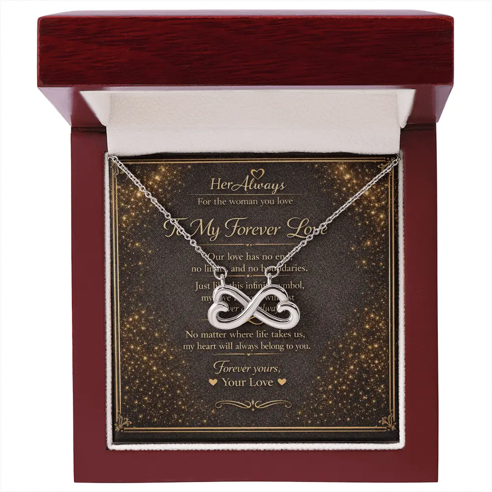
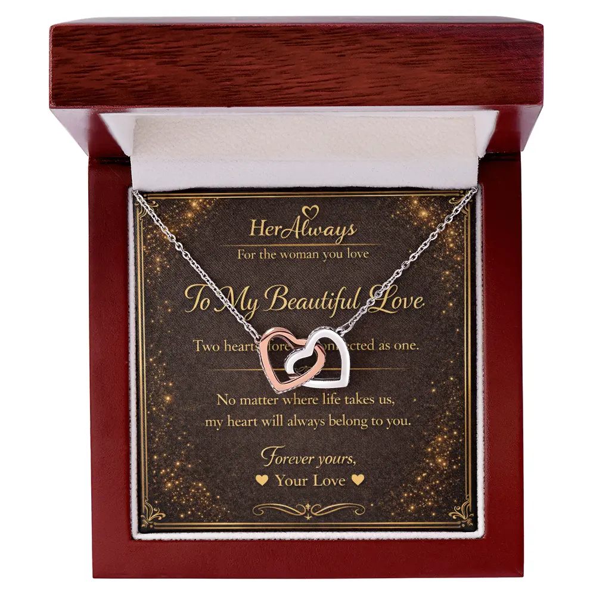
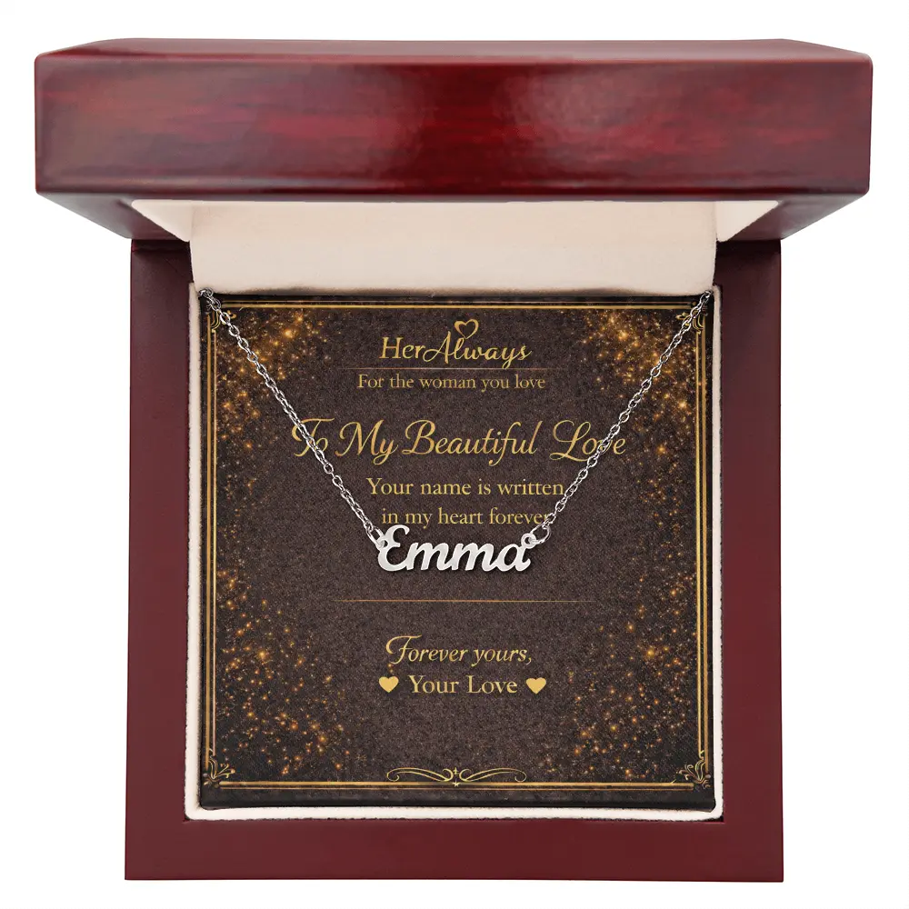
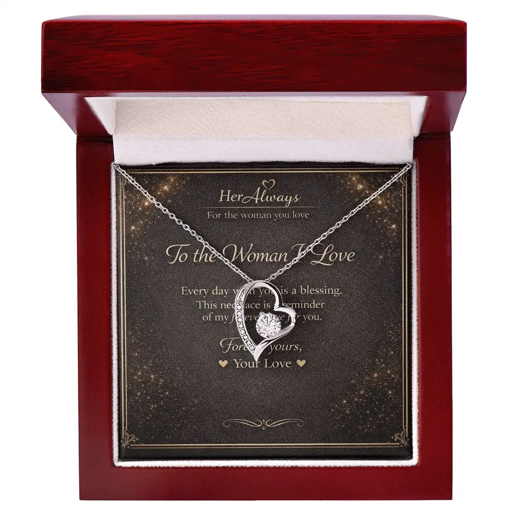

Choosing the right necklace for your girlfriend can feel confusing, especially with so many styles available. A necklace is a meaningful gift that she can wear every day and keep close to her heart.
Many people search for the best necklaces to get your girlfriend when they want to give a romantic and memorable gift. Whether it's for her birthday, anniversary, Valentine’s Day, or a simple surprise, the right necklace can symbolize love, connection, and lasting memories.
Below are some of the most meaningful necklaces to get your girlfriend if you want to give a romantic gift she will always remember.
You can also explore more romantic jewelry gifts in the HerAlways jewelry collection, where you'll find beautifully designed necklaces created for meaningful moments.
If you're looking for more romantic jewelry inspiration, you can also explore our guide on 12 Best Necklace Gifts for Your Girlfriend.
1. Love Knot Necklace

A love knot necklace for girlfriend is one of the most romantic jewelry gifts you can give. The knot design represents two lives tied together forever.
This type of necklace that symbolizes love is often chosen for anniversaries or relationship milestones because it represents an unbreakable bond.
2. Infinity Necklace

An infinity necklace for girlfriend symbolizes endless love and connection. The infinity symbol represents a relationship that continues forever.
This makes it a perfect romantic necklace for girlfriend gifts, especially for anniversaries or Valentine's Day.
3. Heart Necklace

A heart necklace for girlfriend is one of the most classic romantic gifts. The heart symbol has always represented love, affection, and emotional connection.
Many people choose a heart necklace as a necklace gift for girlfriend when they want to express love in a simple but meaningful way.
Heart necklaces are especially popular as a necklace for girlfriend birthday or Valentine’s Day gift.
4. Personalized Name Necklace

A name necklace for girlfriend is one of the most personal jewelry gifts you can give. Personalized jewelry includes her name or a meaningful word.
Many people believe this is the best necklace for girlfriend because it feels unique and thoughtful.
5. Birthstone Necklace
A birthstone necklace for girlfriend represents the month she was born. Birthstones are believed to carry symbolic meaning and emotional value.
Because of this, birthstone jewelry is often considered a meaningful necklace for girlfriend gifts.
6. Locket Necklace
A locket necklace for girlfriend is a sentimental jewelry gift that allows you to place a small photo or message inside.
Lockets are popular because they turn a necklace into a very special necklace for girlfriend that holds personal memories.
7. Pendant Necklace
A pendant necklace for girlfriend is another versatile jewelry option. Pendant necklaces can include symbols like hearts, infinity signs, or meaningful charms.
Many people choose a pendant necklace when they want a beautiful necklace for my girlfriend that she can wear daily.
When Is the Best Time to Gift a Necklace?
A necklace is one of the most romantic gifts you can give because it is worn close to the heart. It works for many different occasions.
- Girlfriend's birthday
- Relationship anniversary
- Valentine’s Day
- Christmas
- Romantic surprises
- Special milestones
This is why a necklace for girlfriend anniversary or birthday gift is one of the most popular romantic presents.
How to Choose the Best Necklace for Your Girlfriend
If you're still wondering what necklace to get my girlfriend, consider these tips when choosing the perfect piece.
- Choose a design that symbolizes love
- Think about her personal style
- Consider personalized jewelry
- Pick something she can wear every day
The best necklace gift for girlfriend is one that feels meaningful and personal.
A Romantic Gift She’ll Never Forget

If you're looking for a meaningful and romantic necklace gift, the Forever Love Necklace is one of the most popular choices that symbolizes everlasting love.
FAQ – Choosing the Right Necklace for Your Girlfriend
What type of necklace do girls like the most?
Many women prefer simple and meaningful designs like heart necklaces, infinity necklaces, and minimalist pendant necklaces that can be worn daily.
Should I buy gold or silver necklace for my girlfriend?
Gold necklaces feel more classic and romantic, while silver necklaces are modern and versatile. The best choice depends on your girlfriend's style.
How do I choose a meaningful necklace for my girlfriend?
Look for designs that symbolize love such as hearts, infinity symbols, or personalized necklaces with her name or birthstone.
Is a personalized necklace a good gift?
Yes. Personalized necklaces like name necklaces or birthstone jewelry make gifts feel unique and sentimental.
Final Thoughts
If you're wondering what necklace to buy your girlfriend, the best choice is one that reflects your relationship and the emotions you want to express.
Whether you choose a heart necklace, infinity necklace, personalized name necklace, or love knot design, these are some of the most romantic necklaces to get your girlfriend.
A thoughtful necklace is more than just jewelry — it becomes a symbol of love, memories, and the connection you share together.